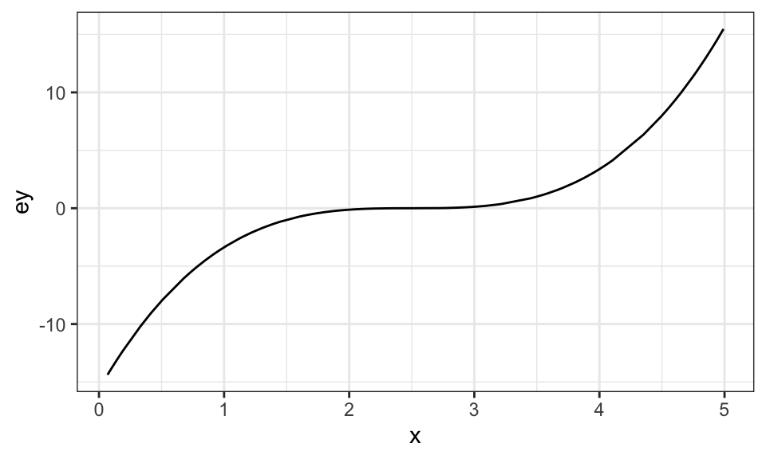
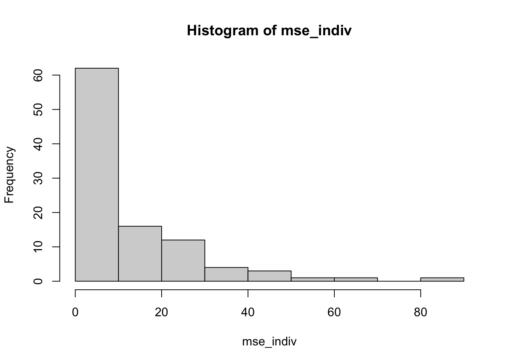
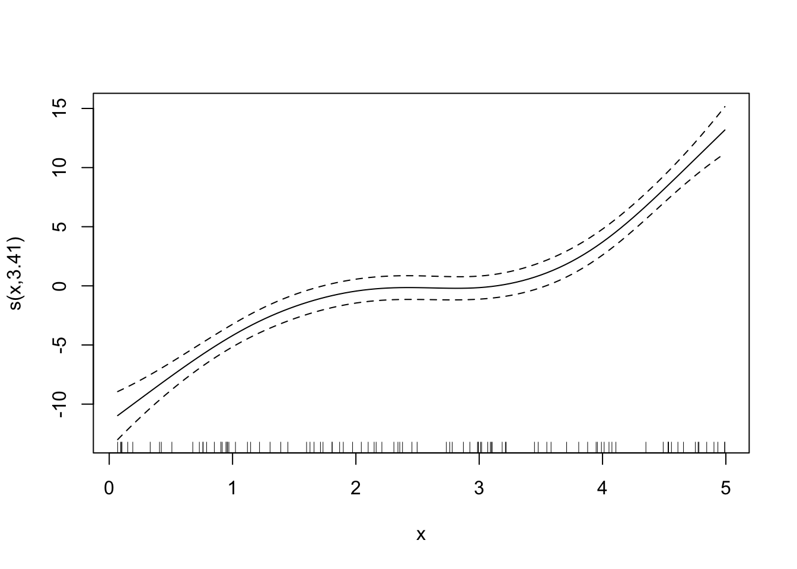
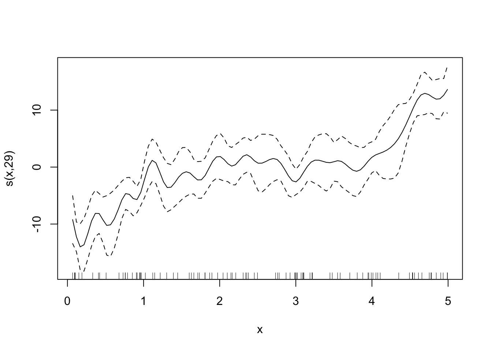
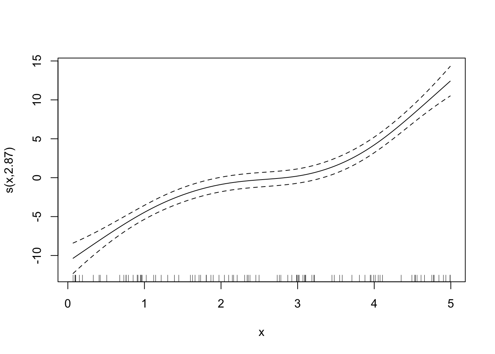
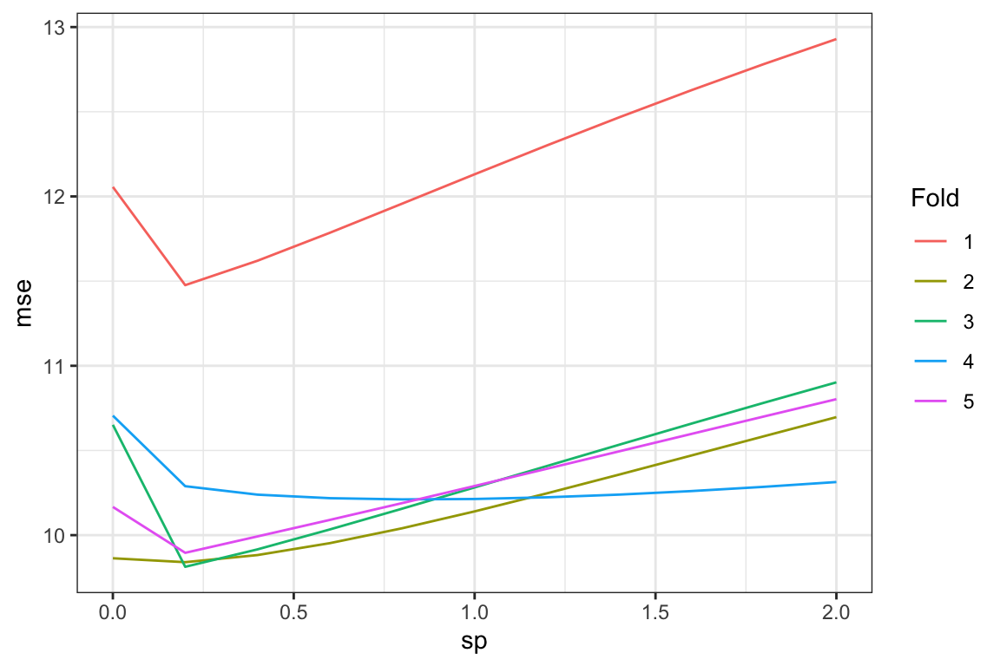
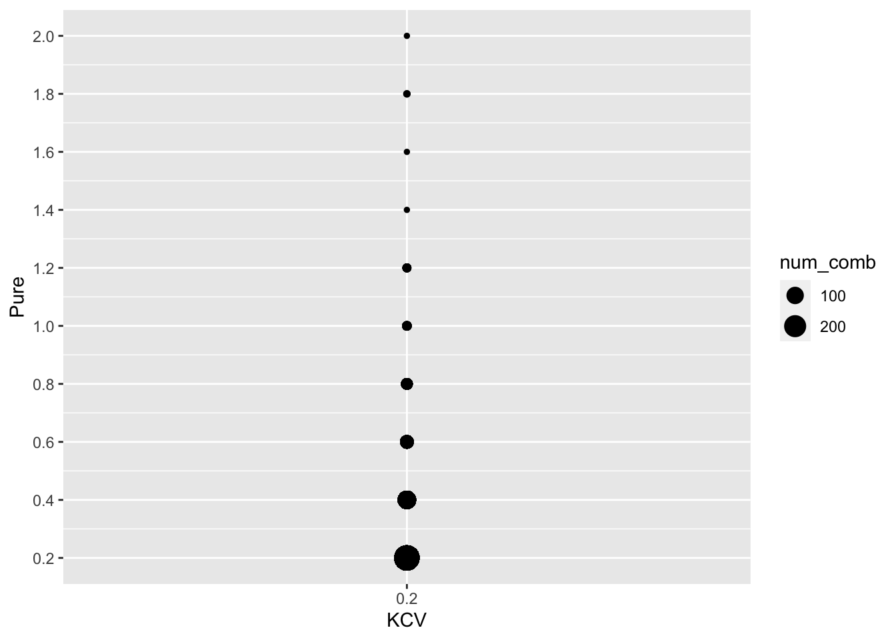

library(data.table)
library(tidyverse)
library(mgcv)
library(rsample)
library(parallel)3 Cross-validation
3.1 Motivations
No model works the best all the time, and searching for the best modeling approach and specifications is an essential part of modeling applications.
For example, we may consider five approaches with varying modeling specifications for each of the approaches:
- Random Forest (RF)
- number of trees (1000, 2000)
- number of variables used in each tree (3, 5, 8)
- and many other hyper parameters
- LASSO
- penalty parameter (1, 2, 3, etc)
- GAM
- number of knots
- penalty parameter
- Boosted Regression Forest (BRF)
- number of trees (1000, 2000)
- number of variables used in each tree (3, 5, 8)
- and many other hyper parameters
- Convolutional Neural Network (CNN)
- convolution matrix dimension
- the order of convolution
- learning rate
- and many other hyper parameters
Our goal here is to find the model that would performs the best when applied to the data that has not been seen yet.
We saw earlier that training MSE is not appropriate for that purpose as picking the model with the lowest training MSE would very much likely to lead you to the over-fitted model. In this lecture, we consider a better way of selecting a model using only train data.
3.2 Leave-One-Out Cross-Validation (LOOCV)
Packages to load for replication
Consider a dataset: \(D = \{X_1, y_1\}, \{X_2, y_2\}, \dots, \{X_N, y_N\}\), where \(X_i\) is a collection of features and \(y_i\) is the dependent variable for \(i\)th observation. Further, suppose you use \(D\) for training ML models and \(\hat{f}()\) is a trained model.
LOOCV leaves out a single observation (say \(i\)), and train a model (say, GAM with the number of knots of 10) using the all the other observations (-\(i\)), and then find MSE for the left-out observation. This process is repeated for all the observations, and then the average of the individual MSEs is calculated.
3.2.1 R demonstration using mgcv::gam()
Let’s demonstrate this using R. Here is the dataset we use.
set.seed(943843)
# define the data generating process
# x fixed
gen_data <- function(x) {
ey <- (x - 2.5)^3 # E[y|x]
y <- ey + 3 * rnorm(length(x)) # y = E[y|x] + u
return_data <- data.table(y = y, x = x, ey = ey)
return(return_data)
}
## generate train data
data <- gen_data(x = runif(100) * 5)Visually, here is the relationship between \(E[y]\) and \(x\):
ggplot(data = data) +
geom_line(aes(y = ey, x = x))
For example, for the case where the first observation is left out for validation,
# leave out the first observation
left_out_observation <- data[1, ]
# all the rest
train_data <- data[-1, ]Now we train a gam model using the train_data, predict \(y\) for the first observation, and find the MSE.
#=== train the model ===#
fitted <- gam(y ~ s(x, k = 10), sp = 0, data = train_data)
#=== predict y for the first observation ===#
y_fitted <- predict(fitted, newdata = left_out_observation)
#=== get MSE ===#
MSE <- (left_out_observation[, y] - y_fitted) ^ 2As described above, LOOCV repeats this process for every single observation of the data. Now, let’s write a function that does the above process for any \(i\) you specify.
#=== define the modeling approach ===#
gam_k_10 <- function(train_data)
{
gam(y ~ s(x, k = 30), sp = 0, data = train_data)
}
#=== define the process of getting MSE for ith observation ===#
get_mse <- function(i, model)
{
left_out_observation <- data[i, ]
# all the rest
train_data <- data[-i, ]
#=== train the model ===#
fitted <- model(train_data)
#=== predict y for the first observation ===#
y_fitted <- predict(fitted, newdata = left_out_observation)
#=== get MSE ===#
MSE <- (left_out_observation[, y] - y_fitted) ^ 2
return(MSE)
} For example, this gets MSE for the 10th observation.
get_mse(10, gam_k_10) 1
1.523446 Let’s now loop over \(i = 1:100\).
mse_indiv <-
lapply(
1:100,
function(x) get_mse(x, gam_k_10)
) %>%
#=== list to a vector ===#
unlist() Here is the distribution of MSEs.
hist(mse_indiv)
We now get the average MSE.
mean(mse_indiv)[1] 12.460163.2.2 Selecting the best GAM specification: Illustration
Now, let’s try to find the best (among the ones we try) GAM specification using LOOCV. We will try ten different GAM specifications which vary in penalization parameter. Penalization parameter can be set using the sp option for mgcv::gam(). A greater value of sp leads to a more smooth fitted curve.
specify_gam <- function(sp) {
function(train_data) {
gam(y ~ s(x, k = 30), sp = sp, data = train_data)
}
}
get_mse_by_sp <- function(sp)
{
temp_gam <- specify_gam(sp)
mse_indiv <-
lapply(
1:100,
function(x) get_mse(x, temp_gam)
) %>%
#=== list to a vector ===#
unlist() %>%
mean()
return_data <-
data.table(
mse = mse_indiv,
sp = sp
)
return(return_data)
}For example, the following code gets you the average MSE for sp \(= 3\).
get_mse_by_sp(3) mse sp
1: 11.56747 3Now, let’s loop over ten values of sp: 0, 0.2, 0.4, 0.6, 0.8, 1, 1.2, 1.4, 1.6, 1.8, 2.
(
mse_data <-
lapply(
seq(0, 2, by = 0.2),
function(x) get_mse_by_sp(x)
) %>%
rbindlist()
) mse sp
1: 12.460156 0.0
2: 9.909992 0.2
3: 9.957858 0.4
4: 10.049327 0.6
5: 10.164749 0.8
6: 10.293142 1.0
7: 10.427948 1.2
8: 10.565081 1.4
9: 10.701933 1.6
10: 10.836829 1.8
11: 10.968701 2.0So, according to the LOOCV, we should pick sp \(= 0.2\) as the penalty parameter.
Now, that we know sp \(= 0.2\) produces the lowest LOOCV MSE, we rerun gam() using the entire dataset (not leaving out any of the observations) and make it our final trained model.
final_gam_spec <- specify_gam(sp = 1)
fit_gam <- final_gam_spec(train_data)Here is what the fitted curve looks like:
plot(fit_gam)
Looks good. By the way, here are the fitted curves for some other sp values.
fitted_curves <-
lapply(
c(0, 0.6, 1, 2),
function(x) {
temp_gam <- specify_gam(sp = x)
fit_gam <- temp_gam(train_data)
}
)
for (plot in fitted_curves) {
plot(plot)
}

LOOCV is perfectly general and can be applied to any statistical methods. However, it can be extremely computationally burdensome because you need to fit the same model for as many as the number of observations. So, if you have 10,000 observations, then you need to fit the model 10,000 times, which can take a long long time.
3.2.3 Summary
Note
LOOCV is perfectly general and can be applied to any statistical methods.
Warning
LOOCV can be highly computation-intensive when the dataset is large
3.3 K-fold Cross-Validation (KCV)
KCV is a type of cross-validation that overcomes the LOOCV’s drawback of being computationally too intensive when the dataset is large. KCV first splits the entire dataset intro \(K\) folds (K groups) randomly. It then leaves out a chunk of observations that belongs to a fold (group), trains the model using the rest of the observations in the other folds, evaluate the trained model using the left-out group. It repeats this process for all the groups and average the MSEs obtained for each group.
Let’s demonstrate this process using R.
set.seed(89534)
data <- gen_data(x = runif(500) * 5)You can use rsample::vfold_cv() to split the data into groups.
#=== split into 5 groups ===#
(
data_folds <- rsample::vfold_cv(data, v = 5)
)# 5-fold cross-validation
# A tibble: 5 × 2
splits id
<list> <chr>
1 <split [400/100]> Fold1
2 <split [400/100]> Fold2
3 <split [400/100]> Fold3
4 <split [400/100]> Fold4
5 <split [400/100]> Fold5As you can see, rsample::vfold_cv() creates \(v\) (\(=5\) here) splits. And each split has both train and test datasets. <split [400/100]> means that \(400\) and \(100\) observations for the train and test datasets, respectively. Note that, the \(100\) observations in the first split (called Fold 1) are in the train datasets of the rest of the splits (Fold 2 through Fold 5).
You can extract the train and test datasets like below using the training() and testing() functions.
train_data <- data_folds[1, ]$splits[[1]] %>% training()
test_data <- data_folds[1, ]$splits[[1]] %>% testing()Now, let’s get MSE for the first fold.
#=== train the model ===#
fitted_model <- gam(y ~ s(x, k = 30), sp = 0, data = train_data)
#=== predict y for the test data ===#
y_hat <- predict(fitted_model, test_data)
#=== calculate MSE for the fold ===#
(test_data[, y] - y_hat)^2 %>% mean()[1] 12.05604Now that we know how to get MSE for a single fold, let’s loop over folds and get MSE for each of the folds. We first create a function that gets us MSE for a single fold.
get_mse_by_fold <- function(data, fold, model)
{
test_data <- data_folds[fold, ]$splits[[1]] %>% testing()
train_data <- data_folds[fold, ]$splits[[1]] %>% training()
#=== train the model ===#
fitted_model <- model(train_data)
#=== predict y for the test data ===#
y_hat <- predict(fitted_model, test_data)
#=== calculate MSE for the fold ===#
mse <- (test_data[, y] - y_hat)^2 %>% mean()
return_data <-
data.table(
k = fold,
mse = mse
)
return(return_data)
}This will get you MSE for the third fold.
get_mse_by_fold(data, 3, gam_k_10) k mse
1: 3 10.65129Now, let’s loop over the row number of data_folds (loop over splits).
(
mse_all <-
lapply(
seq_len(nrow(data_folds)),
function(x) get_mse_by_fold(data, x, gam_k_10)
) %>%
rbindlist()
) k mse
1: 1 12.056038
2: 2 9.863496
3: 3 10.651289
4: 4 10.705704
5: 5 10.166634By averaging MSE values, we get
mse_all[, mean(mse)][1] 10.688633.3.1 Selecting the best GAM specification: Illustration
Just like we found the best gam specification (choice of penalization parameter) using LOOCV, we do the same now using KCV.
get_mse_by_sp_kcv <- function(sp)
{
temp_gam <- specify_gam(sp)
mse_by_k <-
lapply(
seq_len(nrow(data_folds)),
function(x) get_mse_by_fold(train_data, x, temp_gam)
) %>%
rbindlist()
return_data <-
mse_by_k %>%
.[, sp := sp]
return(return_data[])
}For example, the following code gets you the MSE for all the folds for sp \(= 3\).
get_mse_by_sp_kcv(3) k mse sp
1: 1 13.56925 3
2: 2 11.22831 3
3: 3 11.45746 3
4: 4 10.48461 3
5: 5 11.29421 3Now, let’s loop over ten values of sp: 0, 0.2, 0.4, 0.6, 0.8, 1, 1.2, 1.4, 1.6, 1.8, 2.
(
mse_results <-
lapply(
seq(0, 2, by = 0.2),
function(x) get_mse_by_sp_kcv(x)
) %>%
rbindlist()
) k mse sp
1: 1 12.056038 0.0
2: 2 9.863496 0.0
3: 3 10.651289 0.0
4: 4 10.705704 0.0
5: 5 10.166634 0.0
6: 1 11.476153 0.2
7: 2 9.840434 0.2
8: 3 9.813155 0.2
9: 4 10.289085 0.2
10: 5 9.895722 0.2
11: 1 11.620416 0.4
12: 2 9.882467 0.4
13: 3 9.916178 0.4
14: 4 10.239119 0.4
15: 5 9.992636 0.4
16: 1 11.785544 0.6
17: 2 9.952820 0.6
18: 3 10.033789 0.6
19: 4 10.218321 0.6
20: 5 10.090156 0.6
21: 1 11.957640 0.8
22: 2 10.040814 0.8
23: 3 10.156511 0.8
24: 4 10.211168 0.8
25: 5 10.189377 0.8
26: 1 12.130712 1.0
27: 2 10.140277 1.0
28: 3 10.281839 1.0
29: 4 10.213564 1.0
30: 5 10.290230 1.0
31: 1 12.301318 1.2
32: 2 10.246975 1.2
33: 3 10.408152 1.2
34: 4 10.223465 1.2
35: 5 10.392306 1.2
36: 1 12.467400 1.4
37: 2 10.357879 1.4
38: 3 10.534197 1.4
39: 4 10.239448 1.4
40: 5 10.495093 1.4
41: 1 12.627767 1.6
42: 2 10.470802 1.6
43: 3 10.659006 1.6
44: 4 10.260390 1.6
45: 5 10.598085 1.6
46: 1 12.781780 1.8
47: 2 10.584159 1.8
48: 3 10.781853 1.8
49: 4 10.285370 1.8
50: 5 10.700824 1.8
51: 1 12.929162 2.0
52: 2 10.696811 2.0
53: 3 10.902210 2.0
54: 4 10.313617 2.0
55: 5 10.802917 2.0
k mse spLet’s now get the average MSE by sp:
(
mean_mse_data <- mse_results[, .(mean_mse = mean(mse)), by = sp]
) sp mean_mse
1: 0.0 10.68863
2: 0.2 10.26291
3: 0.4 10.33016
4: 0.6 10.41613
5: 0.8 10.51110
6: 1.0 10.61132
7: 1.2 10.71444
8: 1.4 10.81880
9: 1.6 10.92321
10: 1.8 11.02680
11: 2.0 11.12894So, according to the KCV, we should pick sp \(= 0.2\) as the penalty parameter.
By the way, here is what MSE values look like for each fold based on the value of sp by fold.
ggplot(data = mse_results) +
geom_line(aes(y = mse, x = sp, color = factor(k))) +
scale_color_discrete(name = "Fold") +
theme_bw()
Note
Even though we compared different specification of the same approach (GAM), we can compare across different models as well. For example, you can find KCV for an RF model with a particular specifications of its hyper-parameters and compare the KCV with those of the GAM model specifications and see what comes at the top.
3.4 Repeated K-fold Cross-Validation (KCV)
As its name suggest, repeated KCV repeats the process of KCV multiple times. Each KCV iteration splits the original data into k-fold in a different way. A single KCV may not be reliable as the original data was split into such a way that favors one parameter set of or model class over the others. However, if we repeat KCV multiple times, then we can safe-guard against this randomness in a KCV procedure. Repeated KCV is preferred over a single KCV.
You can use rsample::vfold_cv() to create repeated k-fold datasets by using the repeats argument.
#=== split into 5 groups ===#
(
data_folds <- rsample::vfold_cv(data, v = 5, repeats = 5)
)# 5-fold cross-validation repeated 5 times
# A tibble: 25 × 3
splits id id2
<list> <chr> <chr>
1 <split [400/100]> Repeat1 Fold1
2 <split [400/100]> Repeat1 Fold2
3 <split [400/100]> Repeat1 Fold3
4 <split [400/100]> Repeat1 Fold4
5 <split [400/100]> Repeat1 Fold5
6 <split [400/100]> Repeat2 Fold1
7 <split [400/100]> Repeat2 Fold2
8 <split [400/100]> Repeat2 Fold3
9 <split [400/100]> Repeat2 Fold4
10 <split [400/100]> Repeat2 Fold5
# … with 15 more rowsThe output has 5 (number of folds) times 5 (number of repeats) splits. It also has an additional column that indicates which repeat each row is in (id). You can apply get_mse_by_fold() (this function is defined above and calculate MSE) to each row (split) one by one and calculate MSE just like we did above.
(
mean_mse <-
lapply(
seq_len(nrow(data_folds)),
function(x) get_mse_by_fold(data, x, gam_k_10)
) %>%
rbindlist() %>%
.[, mean(mse)]
)[1] 10.659083.5 Does KCV really work?
LOOCV and KCV use the train data to estimate test MSE. But, does it really work? In other words, does it let us pick the parameter that minimizes the test MSE? We will run a simple MC simulations to test this. We continue to use the same data generating process and gam models for this simulation as well.
Now, since we know the data generating process, we can actually use the following metric instead of MSE.
\[ \sum_{i=1}^N(\hat{f}(x_i) - E[y|x_i])^2 \]
This measure removes the influence of the error term that appears in the test MSE. Your objective is to minimize this measure. Of course, you cannot do this in practice because you do not observe \(E[y|x]\). Let’s call this “pure” MSE.
First, we define a function that gets you MSE from KCV and MSE using the test data as a function of sp.
get_mse_by_sp <- function(sp)
{
#=== generate train data and test data ===#
train_data <- gen_data(x = runif(500) * 5)
test_data <- gen_data(x = runif(500) * 5)
#/*----------------------------------*/
#' ## MSE from KCV
#/*----------------------------------*/
#=== split train_data into 5 groups ===#
data_folds <- rsample::vfold_cv(train_data, v = 5)
#=== specify the model ===#
temp_gam <- specify_gam(sp)
#=== get MSE by fold ===#
mse_by_k <-
lapply(
seq_len(nrow(data_folds)),
function(x) get_mse_by_fold(train_data, x, temp_gam)
) %>%
rbindlist()
#=== find the average MSE (over folds) ===#
mse_kcv <-
mse_by_k %>%
.[, .(mse = mean(mse))] %>%
.[, sp := sp] %>%
.[, type := "KCV"]
#/*----------------------------------*/
#' ## pure MSE from the test data
#/*----------------------------------*/
#=== train using the entire train dataset ===#
fitted <- temp_gam(train_data)
#=== find the average MSE (over observations) ===#
mse_test <-
test_data %>%
#=== predict y ===#
.[, y_hat := predict(fitted, newdata = .)] %>%
.[, .(mse = mean((ey - y_hat)^2))] %>%
.[, sp := sp] %>%
.[, type := "Pure"]
#/*----------------------------------*/
#' ## Combine and return
#/*----------------------------------*/
return_data <- rbind(mse_kcv, mse_test)
return(return_data)
}
Warning
Note that you do not have to use an independent test data to obtain pure MSE above even though the code does it so. You could just use the train_data in getting pure MSE and the results would be essentially the same.
For example, this will give you MSE from KCV and MSE using the test data for sp \(= 2\).
get_mse_by_sp(2) mse sp type
1: 11.0072347 2 KCV
2: 0.7131384 2 PureNow, we define a function that loops over all the sp values we test.
sp_seq <- seq(0, 2, by = 0.2)
get_mse <- function(i)
{
print(i) # progress tracker
lapply(
sp_seq,
function(x) get_mse_by_sp(x)
) %>%
rbindlist()
}For example, the following gives you MSE values for all the sp values for a single iteration.
get_mse(1)[1] 1 mse sp type
1: 10.49305386 0.0 KCV
2: 0.46854532 0.0 Pure
3: 10.07060222 0.2 KCV
4: 0.06385132 0.2 Pure
5: 10.14490012 0.4 KCV
6: 0.28102534 0.4 Pure
7: 10.23670256 0.6 KCV
8: 0.29782934 0.6 Pure
9: 10.33852029 0.8 KCV
10: 0.46728439 0.8 Pure
11: 10.44652013 1.0 KCV
12: 0.78308220 1.0 Pure
13: 10.55803026 1.2 KCV
14: 0.15087488 1.2 Pure
15: 10.67109831 1.4 KCV
16: 0.64433189 1.4 Pure
17: 10.78429633 1.6 KCV
18: 0.59293569 1.6 Pure
19: 10.89658887 1.8 KCV
20: 0.86996493 1.8 Pure
21: 11.00723472 2.0 KCV
22: 0.92992710 2.0 Pure
mse sp typeFinally, we run get_mse() 500 times.
mse_results <-
mclapply(
1:500,
get_mse,
mc.cores = 12
) %>%
rbindlist(idcol = "sim_id")
#=== use this if you are a Windows user ===#
# mse_results <-
# lapply(
# 1:500,
# get_mse
# )For each simulation round, let’s find the best sp using KCV and pure MSE.
(
which_sp_optimal <-
mse_results %>%
.[, .SD[which.min(mse), ], by = .(type, sim_id)] %>%
#=== drop mse ===#
.[, mse := NULL] %>%
dcast(sim_id ~ type, value.var = "sp") %>%
.[, num_comb := .N, by = .(KCV, Pure)]
)For example, for the first simulation, sp that would have minimized pure MSE (least error relative to the true \(E[y|x]\) across varying values of \(x\)) was 0.2. On the other hand, if you relied on KCV, you would have chosen 0.2.
The following figure shows the relationship between KCV-based and pure MSE-based sp values.
#=== plot the frequency of sp chosen by KCV ===#
ggplot(data = which_sp_optimal) +
geom_point(aes(y = Pure, x = KCV, size = num_comb)) +
scale_y_continuous(breaks = sp_seq) +
scale_x_continuous(breaks = sp_seq) 
As you can see KCV gives you sp that is close to the sp based on pure MSE in many cases. But, you can also see that KCV can suggest you a very different number as well. KCV is not perfect, which is kind of obvious.